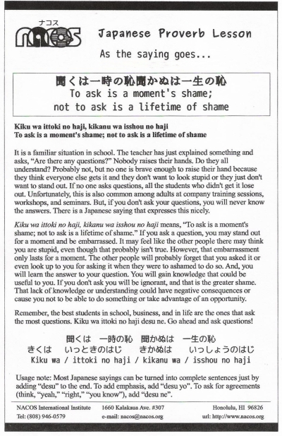

Kiku wa ittoki no haji, kikanu wa isshou no haji
To ask is a moment's shame; not to ask is a lifetime of shame
It is a familiar situation in school. The teacher has just explained something and asks, “Are there any questions?” Nobody raises their hands. Do they all understand? Probably not, but no one is brave enough to raise their hand because they think everyone else gets it and they don't want to look stupid or they just don't want to stand out. If no one asks questions, all the students who didn't get it lose out. Unfortunately, this is also common among adults at company training sessions, workshops, and seminars. But, if you don't ask your questions, you will never know the answers. There is a Japanese saying that expresses this nicely.
Kiku wa ittoki no haji, kikanu wa isshou no haji means, “To ask is a moment's shame; not to ask is a lifetime of shame.” If you ask a question, you may stand out for a moment and be embarrassed. It may feel like the other people there may think you are stupid, even though that probably isn't true. However, that embarrassment only lasts for a moment. The other people will probably forget that you asked it or even look up to you for asking it when they were to ashamed to do so. And, you will learn the answer to your question. You will gain knowledge that could be useful to you. If you don't ask you will be ignorant, and that is the greater shame. That lack of knowledge or understanding could have negative consequences or cause you not to be able to do something or take advantage of an opportunity.
Remember, the best students in school, business, and in life are the ones that ask the most questions. Kiku wa ittoki no haji desu ne. Go ahead and ask questions!
Usage note: Most Japanese sayings can be turned into complete sentences just by adding “desu” to the end. To add emphasis, add “desu yo”. To ask for agreements (think, “yeah,” “right,” “you know”), add “desu ne”.

| © 1995-2013 NACOS International Institute. All Rights Reserved. |